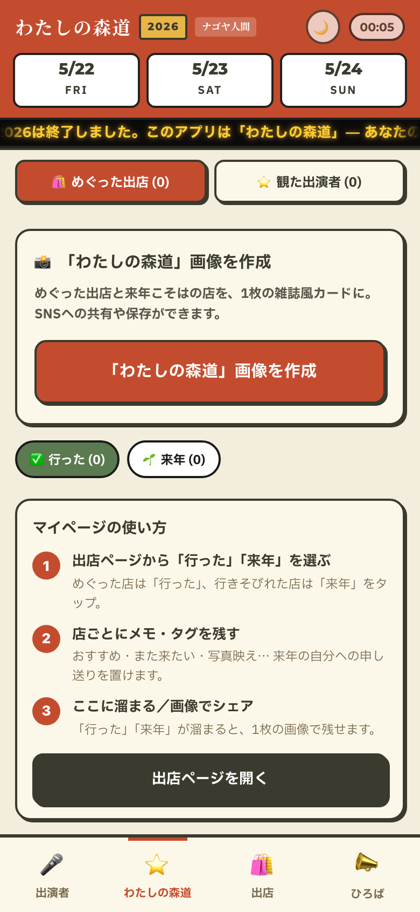
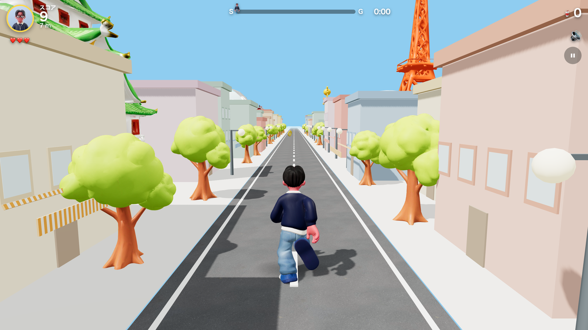

01 — About
ナゴヤ人間とは
名古屋・愛知の変化を、暮らす人の視点から読み解く独立メディアです。2026年4月創刊。完成した記事はnote、更新や考えている途中のことは無料ニュースレターで届けています。
再開発、都市インフラ、地域政治、スポーツやカルチャーまで、テーマは横断します。公式資料と報道を分け、数字の時点と対象範囲を確かめ、公開後に情報が変われば差分を追記します。
批評・考察と並ぶもう一つの軸が、ナゴヤ人間ラボです。資料を読むだけでなく、AIやアプリを実際に使い、つくった過程と、そこで分かったことを開きます。
書き方は、三つ。
- 事実から始める（数字・固有名詞・一次情報を当たる）。
- 構造で読む（なぜ、そうなっているのか）。
- 見立てを示す（事実と解釈を分け、根拠と未確定点を開く）。
Four perspectives
いま扱っている、四つのこと
固定本数を約束するより、一本ごとの根拠と更新に責任を持つ。現在は次の四つを軸に制作しています。
- 01
公式資料の読解
行政資料や統計を比較し、数字の時点・範囲・意味を暮らしに引き直します。
- 02
制作秘話
何を採用し、何を捨てたか。記事や企画ができるまでの判断を開きます。
- 03
AI × 名古屋
AIを調査や制作に使い、速さだけでなく、誤読を止める方法まで検証します。
- 04
地域アプリ制作
街の困りごとや楽しみ方を起点に、実際に使える道具をつくります。
02 — Articles
いま読む記事
現在の編集方針が分かる三本です。安全や公共性の高い情報は無料で公開し、制作手順や再利用できる資料はラボで届けます。
-
1時間104.5ミリの夜、地下50メートルの「10万トン」は何を意味するのか
貯留容量と実流入量、市内全体と対象流域、設計目標と工事段階を分け、豪雨対策の数字を読み直します。公開後の第9報も追記しました。
記事を読む → -
ブルーハムハムの作者が手がけた「ドルチィ」
名古屋ダイヤモンドドルフィンズの新キャラクターを、デザイン変更ではなく、クラブが誰とつながるかを示すアイコンとして考えます。
記事を読む → -
ナゴヤ人間ラボ
公式資料の読解、制作秘話、AI活用、地域アプリ制作。メンバーシップで扱う四つの柱と、無料記事との境界を説明します。
ラボを見る → -
これまでの公開記事
再開発、産業、政治、カルチャー、制作記録まで。これまでの公開記事をnoteで一覧できます。
noteを開く →
03 — Lab
ナゴヤ人間ラボ
ナゴヤ人間ラボは、名古屋を読み、実際につくり、その過程を開く実験室です。公式資料の比較、記事の制作秘話、名古屋を題材にしたAI活用、地域アプリの設計と改善を届けます。

-

App 01
森、道、市場 ガイドアプリ
公式マップPDFと出演者ページを照合し、5/22-24開催の出店535件・出演109組を網羅した非公式ガイド。
- 会場マップ上で店名を3点マーキング。目的の店までの最短ルートを示す
- エリア別・日程別フィルタで、535件の出店と109組の出演者を整理
- 会場の電波が弱くても止まらないよう、オフラインで動く設計に
- 公式マップPDFと出演者ページを照合し、データ整形から座標補正までを自前で実装
-

App 02
わたしの森道
森道市場2026で行ったお店・来年こそ行きたいお店を選んで、1枚の画像にして残せる個人メモアプリ。終わってからも、自分の森道を編集できる。
- 出店ページから「行った」「来年」をタップして、自分のリストを作る
- 選んだ店を、雑誌の表紙風カード1枚の画像に書き出してSNSへ
- 来場の記録から、翌年の作戦まで。余韻を残し続ける設計
- 森道ガイドアプリのデータ（出店535件）と地続きで店を引ける
-

App 03
ナゴヤ人間RUN 3D
名古屋の街を舞台に、コインを集めて障害物を避けて走る3Dランゲーム。ステージごとに巨大ボスが追ってきます。インストール不要、ブラウザだけで遊べます。
- 名古屋の街並みを駆け抜ける、3D視点のランアクション
- コイン収集・障害物回避・ステージボスからの逃走
- 移動・ジャンプ・スライド・ダッシュを操るスピード感
- 集めたコインで遊べるショップとミッション機能も搭載

記事の続きと、更新後の差分を受け取る。
無料ニュースレターでは、記事の行間、次に調べていること、公開後の更新を届けます。
04 — News
最近、動いたこと
- 2026.09.17更新豪雨記事を愛知県第9報の被害状況へ更新しました。
- 2026.09.16記事名古屋ダイヤモンドドルフィンズの新キャラクター「ドルチィ」を考える記事を公開しました。
- 2026.09.16レター無料ニュースレターの初回本編を公開しました。